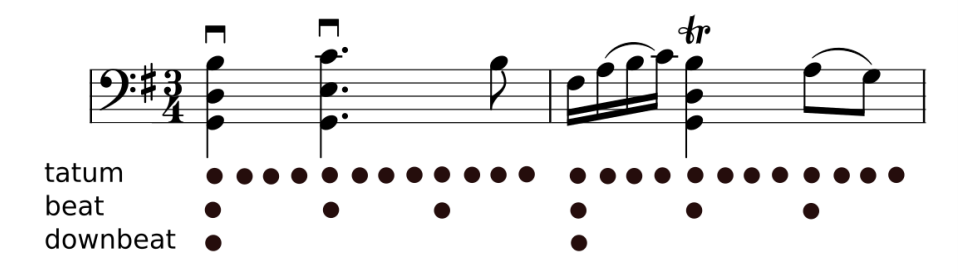

Tempo, Beat, and Downbeat Estimation¶
By Matthew E. P. Davies, Sebastian Böck, Magdalena Fuentes
Welcome message¶
Welcome to the website for the ISMIR 2021 tutorial on Tempo, Beat, and Downbeat Estimation.
The highly interrelated topics of tempo, beat, and downbeat estimation from musical audio signals have spanned the entire history of MIR. Along with many MIR topics, the uptake of deep learning has fundamentally altered how these rhythm-oriented tasks have been addressed and has led to a profound increase in performance. This tutorial seeks to position itself within this narrative by providing a high-level understanding of historical signal processing-oriented approaches leading to hands-on practical experience in building, training, and evaluating the most recent state-of-the-art deep learning approaches. Our goal is not only to expose participants to a complete rhythm analysis pipeline, but also to emphasize the importance of technical and musical design choices, the reliability of annotated data, and multidisciplinarity. In addition, we seek to provide insight into common pitfalls and discuss future challenges.
The tutorial is targeted towards those in the ISMIR community who wish gain comprehensive insight and practical experience in tempo, beat, and downbeat estimation of musical audio signals. For those new to this area, we seek to provide a hands-on technical and pedagogical guide which can serve as the basis for fostering future research. For those with prior knowledge in the area, we hope to convey a solid understanding of recent advances and current state-of-the-art approaches. As a prerequisite for participation, we would expect some basic experience in the execution of python notebooks.
For those who want to get straight to it… all of the main practical code examples can be found in the following Google Colab notebook:
include link here
Desired outcomes¶
The content of the ISMIR 2021 tutorial has been organised in the form of an online book which we hope will remain a useful resource for the ISMIR community beyond the ISMIR 2021 conference. By participating in the tutorial directly, or following the material offline, we strive for everyone to come away with the following:
A high-level understanding of the tasks of tempo, beat, and downbeat estimation as demonstrated through diverse sound examples.
Insight into the historical (i.e. pre deep learning) approaches to these tasks.
Knowledge of evaluation methods and how these can be interpreted to better understand algorithm performance and limitations.
A theoretical grasp of state of recent state of the art deep learning approaches applied to these tasks.
The importance of design decisions when formulating deep learning approaches.
Awareness of open issues and interesting future directions.
Via hands-on coding examples in python, we intend to provide practical experience in:
Loading an existing dataset with ground truth annotations.
Pre-processing the dataset, as well as creating training, validation, and testing splits.
Training individual models per task.
Training a multi-task model which can simultaneously estimate tempo, beat, and downbeat.
Performing inference on the predictions of the trained models.
Contributions from the community¶
We are happy to receive contributions to keep the resources and relevant works sections up-to-date. Please open an issue or submit a Pull Request in the main repository!
How to reference this book¶
License
@book{tempobeatdownbeat:book,
Author = {Matthew E. P. Davies, Sebastian B\:ock, Magdalena Fuentes},
Month = Nov.,
Publisher = {TBD},
Title = {{Tempo, Beat and Downbeat Estimation}},
Year = 2021,
Url = {TBD}
}